Nyzo version 494 (commit on GitHub) improves the stability of the verifier by placing limits on the size of the transaction pool.
This version does not affect the sentinel, as the sentinel does not process incoming transactions.
Previously, the TransactionPool class would accept and store an unlimited number of transactions. This could allow an attacker to disable a verifier by sending a large number of transactions, timestamped far into the future, to consume all available memory on the verifier. This version adds various limits to avoid this kind of attack.
In the BalanceListManager class, a set has been added for efficient determination of whether a sender is in the system.
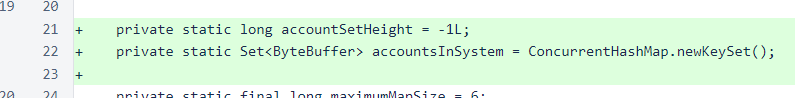In the registerBalanceList() method, the set of account identifiers is rebuilt when a newer balance list at or behind the frozen edge is registered.
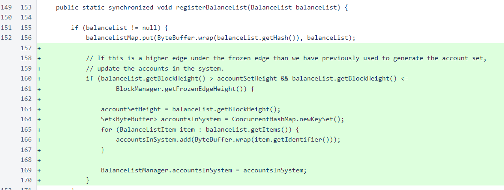A method has also been added for accessing this information.
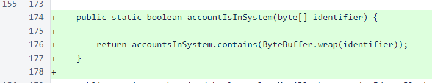In the TransactionPool class, transactions is now a ConcurrentHashMap, and the senderCount map has been added to track the number of transactions from each sender currently in the pool. Even where concurrent maps are not strictly necessary, we plan on changing most maps to concurrent versions to reduce potential data-corruption concerns that might arise due to the highly concurrent nature of Nyzo. This means that most or all maps referenced by class variables will be changed to concurrent versions, while maps only referenced by local variables may not.
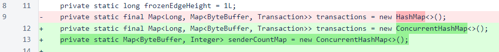There is a new constant to define the maximum number of transactions that will be stored from any one sender at a time. The current value, 100, was chosen because we feel that it's a reasonable limit to the number of transactions that an individual sender might need to send per block, but it's also low enough to minimize the damage that any sender or even a large group of senders might do.
There is also a new constant to define the number of blocks past the open edge for which transactions will be accepted. This was added to protect senders from inadvertently locking their accounts, effectively, for long periods of time by sending a large number of transactions far in the future. These transactions could consume the limit for the sender on verifiers and prevent verifiers from accepting other transactions from these senders.
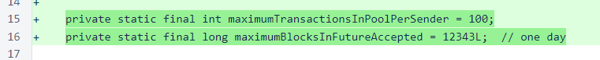The addTransaction method now returns a boolean value to indicate whether the transaction has been added to the pool (returning true if the transaction was already in the pool). It also accepts StringBuilder objects to communicate error and warning messages back to the client of the method to try to reduce any confusion that might arise from these new protections.
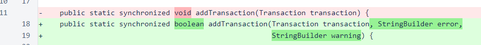Transactions at or behind the frozen edge, and transactions more than the maximum number of blocks specified (about one day) past the open edge, are not added to the pool.
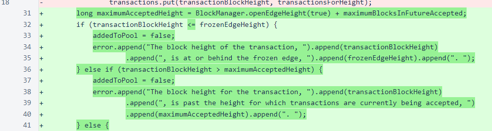Only transactions from known senders are added to the pool.
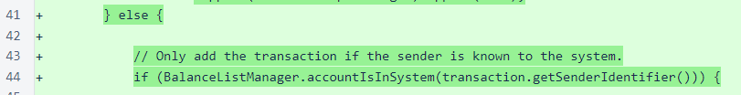Transactions already in the system are not added again or counted again against the limit. If the sender is under their limit, and the transaction is new, the transaction is added to the pool at the appropriate height.
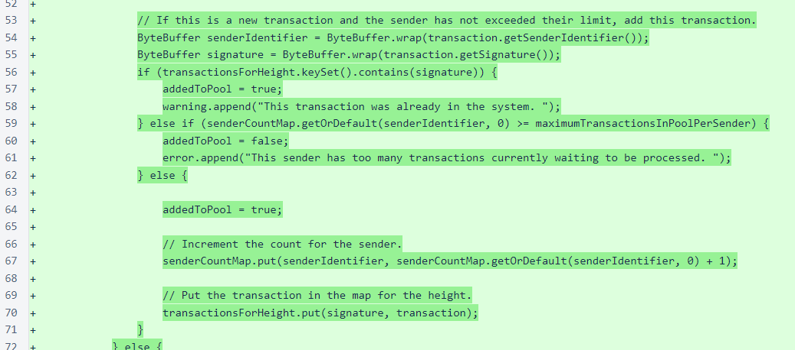In the cleanup method that is called whenever a block is frozen, the sender count map is rebuilt. As this method is synchronized, the count could be decremented for each transaction that is removed from the system, but this rebuilding makes the transaction map the authoritative long-term source of information for this class and reduces the likelihood that subtle logic errors could result in accumulated count problems and incorrect behavior over time.
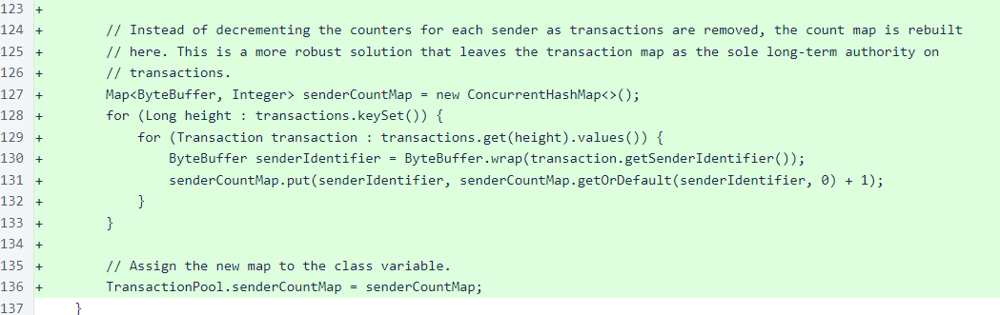In the TransactionResponse class, the new return value of the TransactionPool.addTransaction() method is used, in conjunction with the existing initial validation, to determine the accepted value of the response. The warning has also been added to the response better communicate with the sender about potential issues with the transaction, even if the transaction has been added to the pool. In totality, the feedback provided to the user by this updated code is a significant improvement over the feedback provided by the previous code.
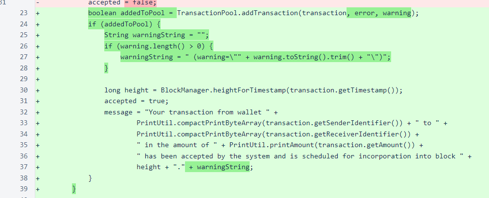For this issue, ∩40,000 was awarded to cafe...08e0.